PROFT 2017
")
6º Simpósio Profissão Tradutor (PROFT 2017)
Informações preliminares
ÓTIMA NOVIDADE: American Translators Association (ATA) confere pontuação máxima aos participantes do PROFT!
Mais uma vez a ATA concederá 10 (dez) pontos em seu ATA Continuing Education Program (Programa de Educação Continuada) a seus membros que participarem do PROFT. É uma honra recebermos mais uma vez esse reconhecimento de uma das mais renomadas associações de tradutores, de prestígio mundial!
Data: dias 3 e 4 de novembro de 2017
Local São Paulo, SP (Auditório do Hotel Pestana São Paulo, R. Tutóia, 77 - Jardim Paulista, São Paulo - SP, 04007-000)
Inscrições no PROFT 2017: Acesse o formulário em https://goo.gl/forms/lmtqlYZ7kUutZBFi2.
Terceiro lote: R$ 220,00 até 10 de setembro de 2017.
Quarto lote: R$ 245,00 enquanto durarem as vagas destinadas ao quarto lote.
(Atenção: A inscrição inclui dois dias de participação, pasta com material, 4 coffee breaks. Não inclui oficinas/minicurso, despesas pessoais, almoços, transporte nem estadia.)
Inscrições nas oficinas: Acesse o formulário em https://goo.gl/forms/G4hKJhgDU4TRpf8m2
Mais uma vez, atendendo a inúmeros pedidos de participantes e palestrantes dos anos anteriores, o Scientia Vinces Cursos irá promover o 6º Simpósio Profissão Tradutor (PROFT 2017). Este evento acadêmico e social procura reunir Tradutores, Intérpretes, Revisores e profissionais de áreas correlatas em um evento descontraído, simpático e voltado para a atualização profissional e para o estabelecimento de contatos, criação de novas redes de comunicação interpessoal e reciclagem de conhecimentos.
Como nas edições anteriores, o PROFT 2017 terá Palestrantes convidados (professores de renome internacional, convidados especialmente para abrilhantarem ainda mais o evento), apresentação de comunicações orais e pôsteres, números artísticos, sorteios de brindes, material de divulgação, coffee-breaks para descontração e networking, e uma linda festa de encerramento.
Veja abaixo algumas fotografias representativas dos dois eventos anteriores, e não deixe de consultar nossa publicação PROFT em Revista (www.proftemrevista.com) onde serão publicados os artigos completos dos colegas que efetivamente fizerem sua apresentação durante o evento.
PROFT 2010

PROFT 2011
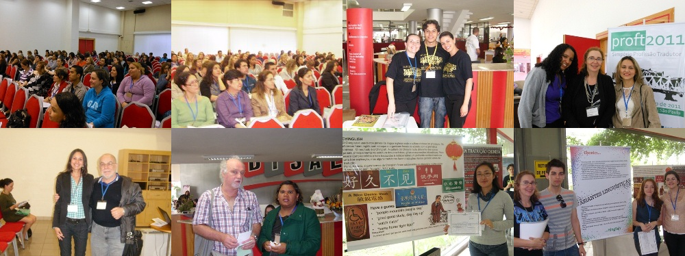PROFT 2013
.jpg)
.jpg)
.jpg)
.jpg)
.jpg)
.jpg)
.jpg)
.jpg)
.jpg)
.jpg)
.jpg)
.jpg)
PROFT 2014
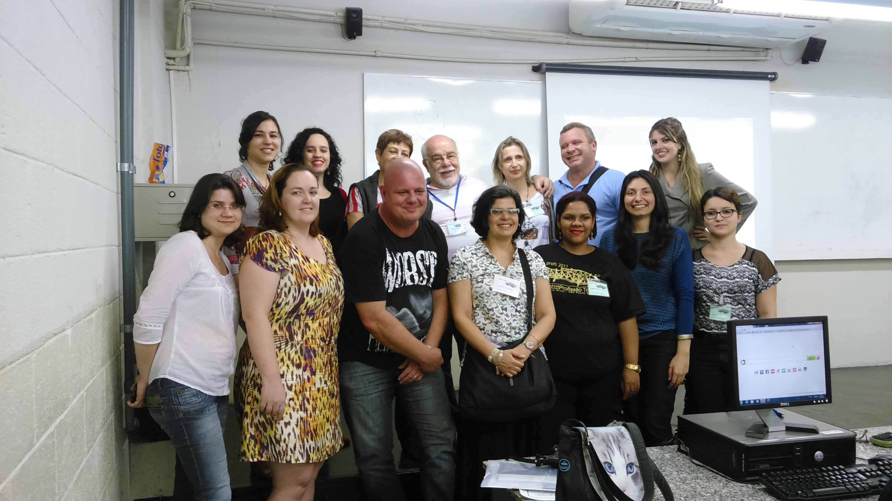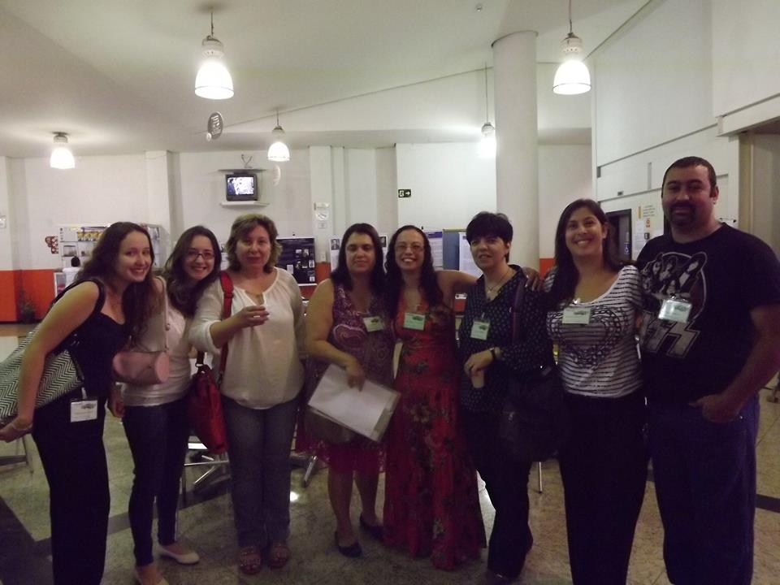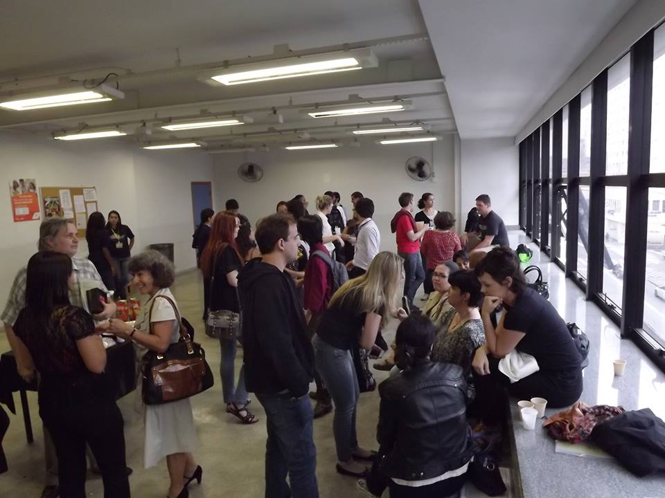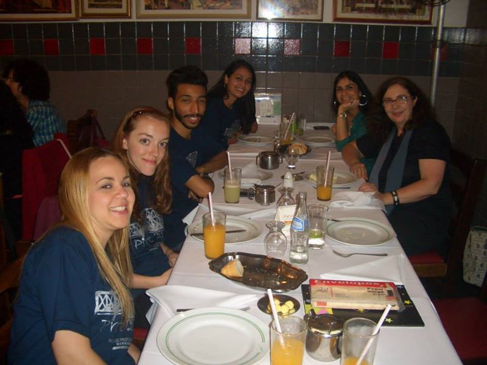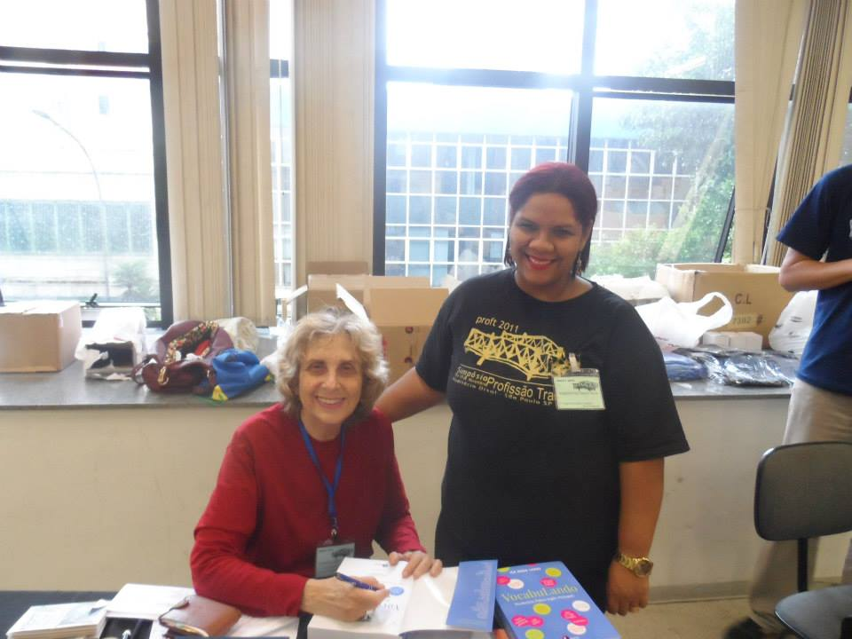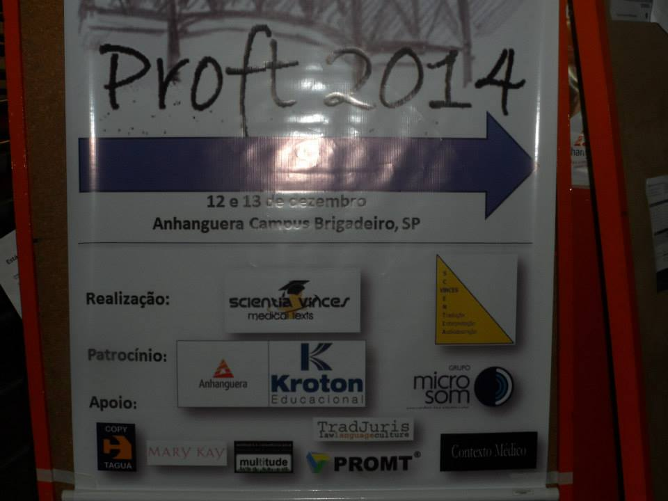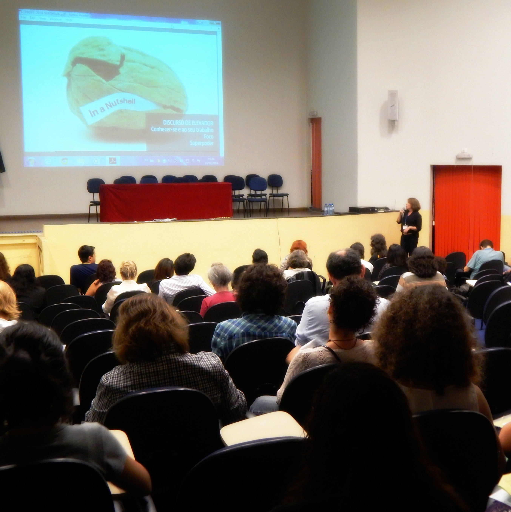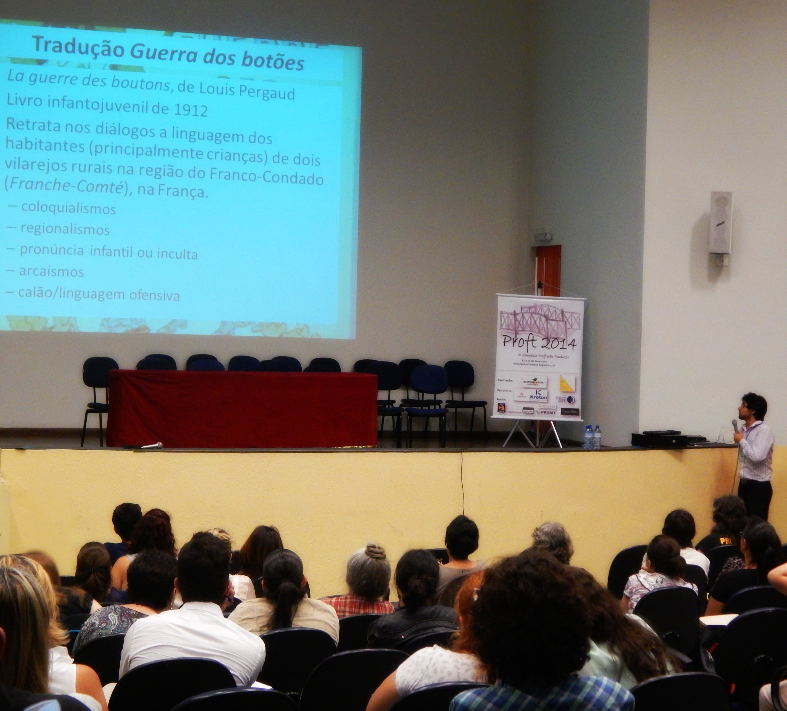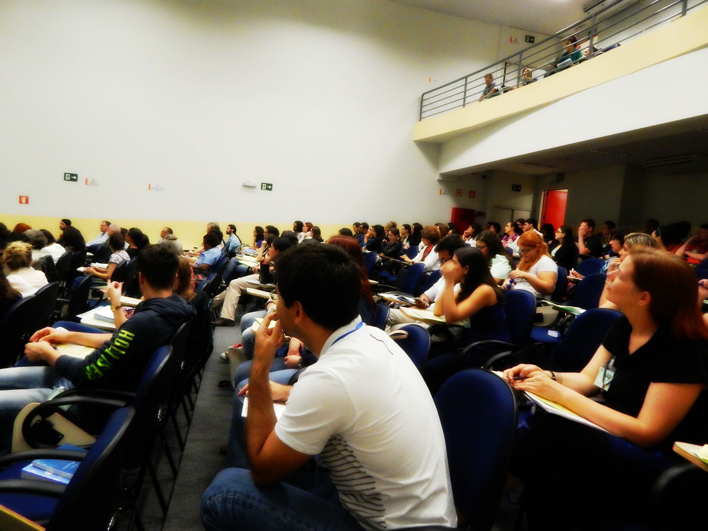
PROFT 2015
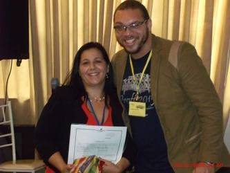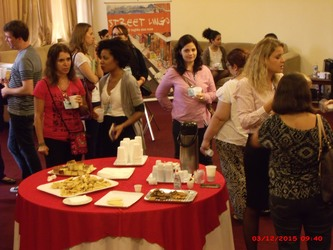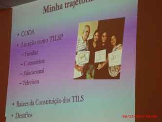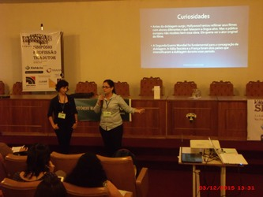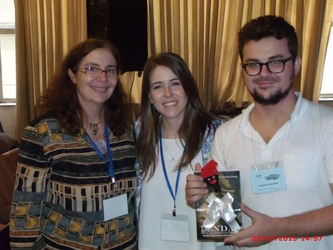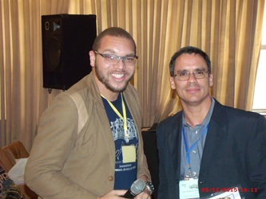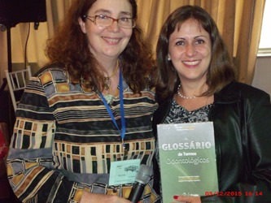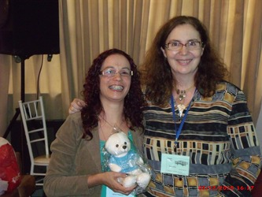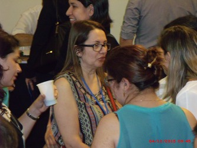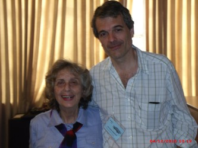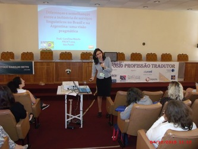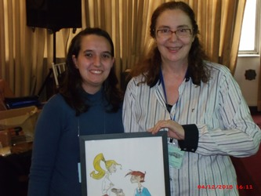
Nosso Simpósio irá abordar apresentações de temas práticos e científicos, temperadas por uma programação social e cultural preparada especialmente para a ocasião. Você é fundamental para o sucesso do evento. Participe, divulgue, colabore!!!